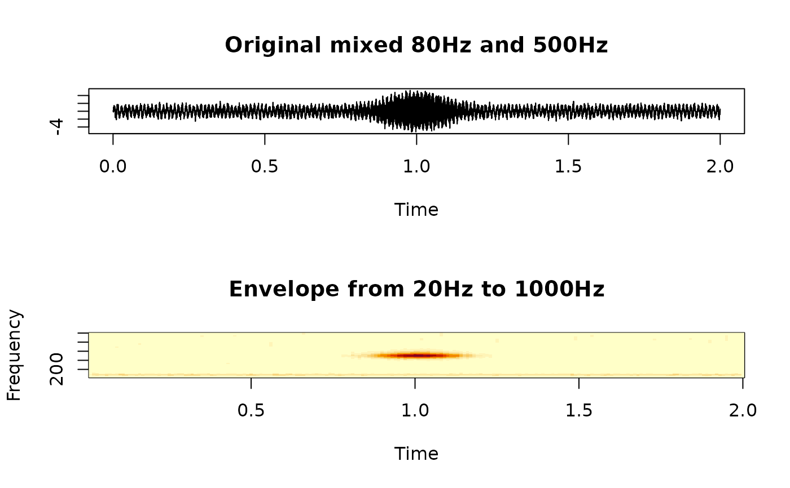

Apply gamma-tone filters to obtain auditory envelopes
Usage
gammatone_fast(
x,
sample_rate,
center_frequencies,
n_bands,
use_hilbert = TRUE,
downsample = NA,
downsample_before_hilbert = FALSE
)Arguments
- x
a numeric vector or matrix; if
xis a matrix, it should be column-major (each column is a sound track)- sample_rate
sampling frequency
- center_frequencies
center frequencies at which the envelopes will be derived; can be either a length of two defining the lower and upper bound, and using
n_bandsto interpolate automatically, or a length of multiple, with the frequencies specified explicitly- n_bands
number of the center frequencies, can be missing if
center_frequenciesis explicit and no interpolation is needed; if specified, then the frequencies will be interpolated using equivalent rectangular bandwidth rate ('ERB')- use_hilbert
whether to apply 'Hilbert' transform; default is true, which calculates the magnitude; set to false when only the filter is needed
- downsample
whether to down-sample the envelopes after the filters; default is
NA(no down-sample).- downsample_before_hilbert
whether the down-sample happens before or after the 'Hilbert' transform so speed up the computation if the signal is too long; only used when
downsampleis greater than 1; default isFALSE. Use with caution, especially when the voice center frequency is close to the 'Nyquist' frequency. However, if used properly, there will be significant performance boost on large signals with high sampling rates
Value
A file-array object of filtered and potentially down-sampled data; see 'Examples' on how to use this function.
Examples
fs <- 4000
time <- seq_len(8000) / fs
x <- sin(160 * pi * time) +
sin(1000 * pi * time) * dnorm(time, mean = 1, sd = 0.1) +
0.5 * rnorm(length(time))
# envelope
result <- gammatone_fast(
x,
sample_rate = fs,
center_frequencies = c(20, 1000),
n_bands = 128,
# default downsample happens after hilbert
downsample = 40
)
oldpar <- par(mfrow = c(2, 1))
plot(
time,
x,
type = "l",
xlab = "Time",
ylab = "",
main = "Original mixed 80Hz and 500Hz"
)
# only one channel
envelope <- subset(result, Channel ~ Channel == 1, drop = TRUE)
dnames <- dimnames(envelope)
image(
x = as.numeric(dnames$Time),
y = as.numeric(dnames$Frequency),
z = envelope,
xlab = "Time",
ylab = "Frequency",
main = "Envelope from 20Hz to 1000Hz"
)

par(oldpar) # reset graphics state